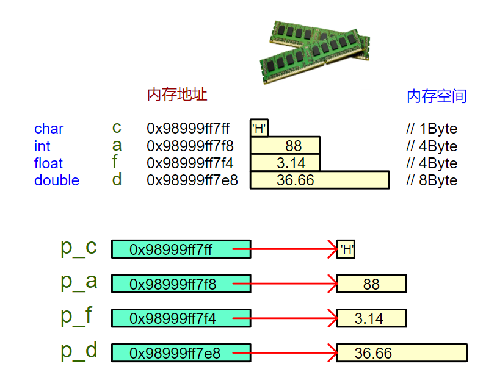

<!DOCTYPE lake>
<h1 data-lake-id="GY556" id="GY556"><span data-lake-id="u45806190" id="u45806190">0&gt; 功能需求</span></h1><p data-lake-id="uc7c0b9ae" id="uc7c0b9ae"><span data-lake-id="u7fdf83ac" id="u7fdf83ac">指针变量是存储内存地址的变量，那不同指针类型，所占内存空间大小是多少，请代码验证。</span></p><hr/><h1 data-lake-id="PLJUk" id="PLJUk"><span data-lake-id="ub5a42130" id="ub5a42130">1&gt; 程序设计</span></h1><span class="yuque-card-unsupported">[codeblock]</span><hr/><h1 data-lake-id="Y58F7" id="Y58F7"><span data-lake-id="ua18fc330" id="ua18fc330">2&gt; 结果分析</span></h1><span class="yuque-card-unsupported">[codeblock]</span><p data-lake-id="u8c0450b8" id="u8c0450b8"></p><hr/><h1 data-lake-id="uDAbj" id="uDAbj"><span data-lake-id="u3415ec24" id="u3415ec24">3&gt; 结论总结</span></h1><p data-lake-id="ucacfdd6d" id="ucacfdd6d"><span data-lake-id="u4b5c7e24" id="u4b5c7e24">64位系统：指针变量大小为</span><strong><span data-lake-id="ue74295e9" id="ue74295e9" style="color: #DF2A3F">8字节</span></strong><span data-lake-id="u7cb68e92" id="u7cb68e92">，在64位操作系统中；</span></p><p data-lake-id="u0d9b5e11" id="u0d9b5e11"><span data-lake-id="u240ce5cb" id="u240ce5cb">​</span><br/></p><p data-lake-id="uc5ac62b1" id="uc5ac62b1"><span data-lake-id="u34c09b2c" id="u34c09b2c">​</span><span data-lake-id="u753f9a84" id="u753f9a84">❓</span><span data-lake-id="u69fe00a6" id="u69fe00a6">：为什么设计成固定大小？</span></p><p data-lake-id="ueda6df5a" id="ueda6df5a"><span data-lake-id="uc2a9dcb9" id="uc2a9dcb9">🐋</span><span data-lake-id="u51a6e03c" id="u51a6e03c">：地址本质是内存编号，如同教室的门牌号，与房间大小无关；</span></p><hr/><h1 data-lake-id="DdrDY" id="DdrDY"><span data-lake-id="ue460567a" id="ue460567a">🐻</span><span data-lake-id="u7dd4dc9d" id="u7dd4dc9d">实践练习</span></h1><span class="yuque-card-unsupported">[codeblock]</span>